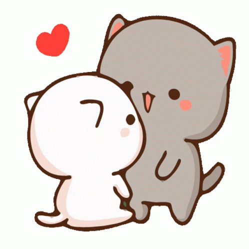

Hi babyy, I miss you so muchh unta makalaag nata soon para ma treat nasad tika hehe. Random kaayo ni nohh pero I just want to show you how much I appreciate you and unta di ka sgeg pangaway bi! Mwaamwaaa goodluck and ingat sa inyong practices and best of luck sa day nga sayaw ninyo I know you can do it! Unta magkita nata soonn mingaw najud kayko nimo ayy, corny kaayo ni nga message noh klaro kaayo nag katawa ka magbasa ani HAHAHAHA since dili man ko dancer kagaya saimong you know whooo so this is my way of showing nga love kaayo tika through the use of my own skills.😉 Amping palagi and I miss you so very much! Don't change anything about yourself, if naa kay gusto ipalabas ipakita lang ayaw kaulaw! keep being the Strel who's bubbly, smiley, good vibes sa tanan and most of all, maldita! but atleast now, you're MY maldita hehe, just keep being you because that's the person i fell in love with. -Adam💌
